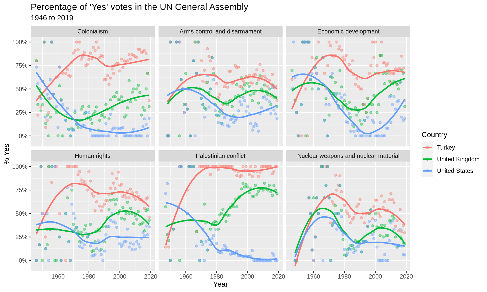

library(tidyverse)
library(lubridate)
library(scales)
library(DT)
library(unvotes)Ex 1.1: UN Votes
teach_ds :: Teaching data science with the tidyverse
Introduction
How do various countries vote in the United Nations General Assembly, how have their voting patterns evolved throughout time, and how similarly or differently do they view certain issues? Answering these questions (at a high level) is the focus of this analysis.
Packages
We will use the tidyverse, lubridate, and scales packages for data wrangling and visualization, and the DT package for interactive display of tabular output, and the unvotes package for the data.
Data
The data we’re using originally come from the unvotes package. In the chunk below we modify the data by joining the various data frames provided in the package to help you get started with the analysis.
unvotes <- un_votes |>
inner_join(un_roll_calls, by = "rcid") |>
inner_join(un_roll_call_issues, by = "rcid")UN voting patterns
Let’s create a data visualisation that displays how the voting record of the UK & NI changed over time on a variety of issues, and compares it to two other countries: US and Turkey.
We can easily change which countries are being plotted by changing which countries the code above filters for. Note that the country name should be spelled and capitalized exactly the same way as it appears in the data. See the Appendix for a list of the countries in the data.
unvotes |>
filter(country %in% c("United Kingdom", "United States", "Turkey")) |>
mutate(year = year(date)) |>
group_by(country, year, issue) |>
summarize(percent_yes = mean(vote == "yes")) |>
ggplot(mapping = aes(x = year, y = percent_yes, color = country)) +
geom_point(alpha = 0.4) +
geom_smooth(method = "loess", se = FALSE) +
facet_wrap(~issue) +
scale_y_continuous(labels = percent) +
labs(
title = "Percentage of 'Yes' votes in the UN General Assembly",
subtitle = "1946 to 2019",
y = "% Yes",
x = "Year",
color = "Country"
)
References
- David Robinson (2021). unvotes: United Nations General Assembly Voting Data. R package version 0.3.0.
- Erik Voeten “Data and Analyses of Voting in the UN General Assembly” Routledge Handbook of International Organization, edited by Bob Reinalda (published May 27, 2013).
- Much of the analysis has been modeled on the examples presented in the unvotes package vignette.
Appendix
Below is a list of countries in the dataset: